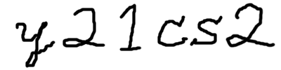

2021年度 コンピュータサイエンス第二 (1a)
本授業について
2021年12月6日
0. はじめに
0.1. 講師・TA紹介
講師
TA
- Nesrine Berjabさん
- Chen Xueyiさん
0.2. 質問するには
- Discord を使う。
(詳細はコンピュータサイエンス第一 (1a) の
ガイダンスを参照。)
- 注意:
課題や成績に関する個別の質問は、必ずメールで。
このとき氏名・学籍番号を書くこと。
- メール:
@shinyama.jp
- 原則として、質問に答えられるのは大学の業務時間内 (平日 8:30〜17:15) に限ります。
0.3. 他クラスから移動してきた方へ
- 本クラスでは、Python をお使いのパソコンに
じかにインストールして実行します。
クラウド上のサービス (Google Colab など) や
Jupyter は使わないので注意してください。
- 詳細は、コンピュータサイエンス第一 (1a) の
第1回
を参照してください。
- VS Code エディタのインストール方法・使い方については
第3回
を参照してください。
1. 本授業で習うこと
最終的な目標 …
コンピュータサイエンス的な「考え方」を学ぶこと。
注意:
プログラミングが上手である ≠
コンピュータサイエンスを理解している。
この区別は重要である。
大学は世の中が変わっても使える普遍的な知識を学ぶところであり、
特定の職種や技術の訓練を行うところではない
(10年後には Python なぞ誰も使わなくなっているかもしれない)。
したがって、プログラムを上手に書けるようになることが
この授業の目標ではない。
- 【再帰】
- 再帰とは、プログラムを簡単にするための抽象的な
考え方のひとつである。本授業では演習を通して再帰を学習する。
- 【ソートアルゴリズム】
- ソートあるいは並べ替えをおこなう
プログラムを使って、再帰および計算量の理論の実例を学ぶ。
- 【計算量の理論】
- コンピュータは魔法ではないので、あらゆる
処理には一定の時間がかかる。ここではその感覚を学習する。
- 【探索】
- AIをはじめとする多くの知的な処理は「答えを見つけること」
すなわち探索として処理される。ここでは探索の基礎を学ぶ。
- 【動的計画法】
- 以上の成果を使って、最終的に迷路を生成し、
それの最短経路を発見するプログラムを作成する。
動的計画法によってこれが効率的にできることを学習する。
$ python maze.py 21 11
Maze:
#####################
# # # # #
# # ### # # ### # # #
# # # # # #
# # # # ### ##### # #
# # # # # # # #
##### ##### # # # # #
# # # # # # # #
# ### ######### # ###
# # # #
#####################
Solution:
#####################
#... # # #....... #
# #.### # #.### #.# #
# #......... # #.# #
# # # # ### #####.# #
# # # # # #.# #
##### ##### # # #.# #
# # # # # #.# #
# ### ######### #.###
# # #...#
#####################
2. 成績評価の方法
- 演習への参加および課題提出の合計により評価する。
(101点以上の点数は100点に切り詰めるものとする。)
- ブレイクアウトルーム演習への参加 (毎回2点×7 = 14点)。
毎授業ごとのブレイクアウトルーム演習に参加する。
- 小課題 (各5点×7 = 35点)。
短いプログラムを書く。締め切りは1週間後。
- 中課題 (各15点×3 = 45点)。
やや長めのプログラムを書く。締め切りは2週間後。
- チャレンジ課題 (各5点×3 = 15点)。
やる気のある人向け。締め切りは2週間後。
- 課題提出はすべて T2SCHOLA を使っておこなう。
- 提出期限を過ぎたものは原則として 0点とする。
ブレイクアウトルーム演習の採点基準
参加すれば得点。
小課題の採点基準
とにかくプログラムが正しく動けば 5点、そうでなければ 0点。
原則として部分点はなし。コード中にコメント等は必要ない。
中課題の採点基準
- エラーを出さずに実行する … +5点。
- a. + 正しい結果を出力する … +5点。
- b. + コードが理解しやすい … +5点。
「理解しやすいコード」とは
- すっきりした論理
- 妥当な変数名のつけ方
- わかりやすい説明 (コメント)
などがある。説明は、長ければよいとは限らない (バランスが重要)。
不正行為に関する警告
課題で他人の答えを写すことは不正行為とみなされ、
単位の剥奪、停学 (最悪の場合) などがありうる。
不正行為をした科目の点数は 0 点になる。
東京工業大学学生の懲戒等に関する規程 本則
第7条(定期試験等における不正行為)
学生が，定期試験等における不正行為のため懲戒処分を受けた場合は，不正行為のあったクォーター(学則第7条第2項及び大学院学則第9条第2項の規定に基づき各学期を前半と後半に分けた期間をいう。以下同じ。)に当該学生が履修した授業科目等の成績をすべて0点又は不合格とする。なお，授業科目等の履修期間が不正行為のあったクォーター以外のクォーターを含む場合も，同様とする。
なお、不正行為はつねに見た側も見せた側も処罰される。
したがって、以下の2点を守ることが重要である:
- 他人と相談するのはよいが、絶対に答えを見ないようにする。
- 友達から頼まれても、絶対に自分の答案を見せない。
逆に、課題と直接関係ないこと (PCの使い方など) は
積極的に他人から技を盗むべし。
Yusuke Shinyama